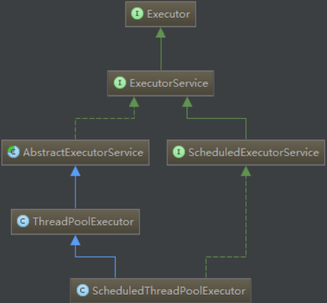
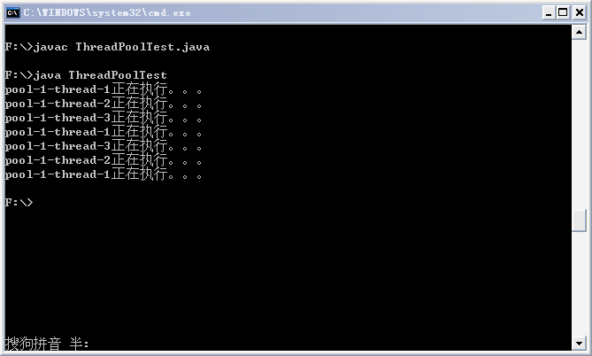

java并发编程
原文链接：http://t.csdnimg.cn/M6zz3
Executors
在Java 5之后，并发编程引入了一堆新的启动、调度和管理线程的API。
Executor框架便是Java 5中引入的，其内部使用了线程池机制，它在java.util.cocurrent 包下，通过该框架来控制线程的启动、执行和关闭，可以简化并发编程的操作。
因此，在Java 5之后，通过Executor来启动线程比使用Thread的start方法更好，除了更易管理，效率更好（用线程池实现，节约开销）外，
还有关键的一点：有助于避免this逃逸问题——如果我们在构造器中启动一个线程，因为另一个任务可能会在构造器结束之前开始执行，此时可能会访问到初始化了一半的对象用Executor在构造器中。
Eexecutor作为灵活且强大的异步执行框架，其支持多种不同类型的任务执行策略，提供了一种标准的方法将任务的提交过程和执行过程解耦开发，基于生产者-消费者模式，其提交任务的线程相当于生产者，执行任务的线程相当于消费者，并用Runnable来表示任务，Executor的实现还提供了对生命周期的支持，以及统计信息收集，应用程序管理机制和性能监视等机制。
一、Executor的UML图：（常用的几个接口和子类）

Executor框架包括：线程池，Executor，Executors，ExecutorService，CompletionService，Future，Callable等。
二、Executor和ExecutorService
Executor：一个接口，其定义了一个接收Runnable对象的方法executor，其方法签名为executor(Runnable command),该方法接收一个Runable实例，它用来执行一个任务，任务即一个实现了Runnable接口的类，一般来说，Runnable任务开辟在新线程中的使用方法为：new Thread(new RunnableTask())).start()，但在Executor中，可以使用Executor而不用显示地创建线程：executor.execute(new RunnableTask()); // 异步执行
ExecutorService：是一个比Executor使用更广泛的子类接口，其提供了生命周期管理的方法，返回 Future 对象，以及可跟踪一个或多个异步任务执行状况返回Future的方法；可以调用ExecutorService的shutdown（）方法来平滑地关闭 ExecutorService，调用该方法后，将导致ExecutorService停止接受任何新的任务且等待已经提交的任务执行完成(已经提交的任务会分两类：一类是已经在执行的，另一类是还没有开始执行的)，当所有已经提交的任务执行完毕后将会关闭ExecutorService。因此我们一般用该接口来实现和管理多线程。
通过 ExecutorService.submit() 方法返回的 Future 对象，可以调用isDone（）方法查询Future是否已经完成。当任务完成时，它具有一个结果，你可以调用get()方法来获取该结果。你也可以不用isDone（）进行检查就直接调用get()获取结果，在这种情况下，get()将阻塞，直至结果准备就绪，还可以取消任务的执行。Future 提供了 cancel() 方法用来取消执行 pending 中的任务。ExecutorService 部分代码如下：
1 | public interface ExecutorService extends Executor { |
三、Executors类： 主要用于提供线程池相关的操作
Executors类，提供了一系列工厂方法用于创建线程池，返回的线程池都实现了ExecutorService接口。
1、public static ExecutorService newFiexedThreadPool(int Threads) 创建固定数目线程的线程池。
2、public static ExecutorService newCachedThreadPool()：创建一个可缓存的线程池，调用execute 将重用以前构造的线程（如果线程可用）。如果没有可用的线程，则创建一个新线程并添加到池中。终止并从缓存中移除那些已有 60 秒钟未被使用的线程。
3、public static ExecutorService newSingleThreadExecutor()：创建一个单线程化的Executor。
4、public static ScheduledExecutorService newScheduledThreadPool(int corePoolSize)
创建一个支持定时及周期性的任务执行的线程池，多数情况下可用来替代Timer类。
| newCachedThreadPool() | -缓存型池子，先查看池中有没有以前建立的线程，如果有，就 reuse.如果没有，就建一个新的线程加入池中 -缓存型池子通常用于执行一些生存期很短的异步型任务 因此在一些面向连接的daemon型SERVER中用得不多。但对于生存期短的异步任务，它是Executor的首选。 -能reuse的线程，必须是timeout IDLE内的池中线程，缺省 timeout是60s,超过这个IDLE时长，线程实例将被终止及移出池。 注意，放入CachedThreadPool的线程不必担心其结束，超过TIMEOUT不活动，其会自动被终止。 |
| newFixedThreadPool(int) | -newFixedThreadPool与cacheThreadPool差不多，也是能reuse就用，但不能随时建新的线程 -其独特之处:任意时间点，最多只能有固定数目的活动线程存在，此时如果有新的线程要建立，只能放在另外的队列中等待，直到当前的线程中某个线程终止直接被移出池子 -和cacheThreadPool不同，FixedThreadPool没有IDLE机制（可能也有，但既然文档没提，肯定非常长，类似依赖上层的TCP或UDP IDLE机制之类的），所以FixedThreadPool多数针对一些很稳定很固定的正规并发线程，多用于服务器 -从方法的源代码看，cache池和fixed 池调用的是同一个底层 池，只不过参数不同: fixed池线程数固定，并且是0秒IDLE（无IDLE） cache池线程数支持0-Integer.MAX_VALUE(显然完全没考虑主机的资源承受能力），60秒IDLE |
| newScheduledThreadPool(int) | -调度型线程池 -这个池子里的线程可以按schedule依次delay执行，或周期执行 |
| SingleThreadExecutor() | -单例线程，任意时间池中只能有一个线程 -用的是和cache池和fixed池相同的底层池，但线程数目是1-1,0秒IDLE（无IDLE） |
四、Executor VS ExecutorService VS Executors
正如上面所说，这三者均是 Executor 框架中的一部分。Java 开发者很有必要学习和理解他们，以便更高效的使用 Java 提供的不同类型的线程池。总结一下这三者间的区别，以便大家更好的理解：
- Executor 和 ExecutorService 这两个接口主要的区别是：ExecutorService 接口继承了 Executor 接口，是 Executor 的子接口
- Executor 和 ExecutorService 第二个区别是：Executor 接口定义了 execute()方法用来接收一个Runnable接口的对象，而 ExecutorService 接口中的 submit()方法可以接受Runnable和Callable接口的对象。
- Executor 和 ExecutorService 接口第三个区别是 Executor 中的 execute() 方法不返回任何结果，而 ExecutorService 中的 submit()方法可以通过一个 Future 对象返回运算结果。
- Executor 和 ExecutorService 接口第四个区别是除了允许客户端提交一个任务，ExecutorService 还提供用来控制线程池的方法。比如：调用 shutDown() 方法终止线程池。可以通过 《Java Concurrency in Practice》 一书了解更多关于关闭线程池和如何处理 pending 的任务的知识。
- Executors 类提供工厂方法用来创建不同类型的线程池。比如: newSingleThreadExecutor() 创建一个只有一个线程的线程池，newFixedThreadPool(int numOfThreads)来创建固定线程数的线程池，newCachedThreadPool()可以根据需要创建新的线程，但如果已有线程是空闲的会重用已有线程。
下面给出一个Executor执行Callable任务的示例代码：
1 | import java.util.ArrayList; |
五、自定义线程池
自定义线程池，可以用ThreadPool Executor类创建，它有多个构造方法来创建线程池，用该类很容易实现自定义的线程池，这里先贴上示例程序：
1 | import java.util.concurrent.ArrayBlockingQueue; |
运行结果如下：

从结果中可以看出，七个任务是在线程池的三个线程上执行的。这里简要说明下用到的ThreadPoolExecuror类的构造方法中各个参数的含义。
1 | public ThreadPoolExecutor (int corePoolSize, int maximumPoolSize, long keepAliveTime, TimeUnit unit,BlockingQueue<Runnable> workQueue) |
corePoolSize：线程池中所保存的核心线程数，包括空闲线程。
maximumPoolSize：池中允许的最大线程数。
keepAliveTime：线程池中的空闲线程所能持续的最长时间。
unit：持续时间的单位。
workQueue：任务执行前保存任务的队列，仅保存由execute方法提交的Runnable任务。
根据ThreadPoolExecutor源码前面大段的注释，我们可以看出，当试图通过excute方法将一个Runnable任务添加到线程池中时，按照如下顺序来处理：
1、如果线程池中的线程数量少于corePoolSize，即使线程池中有空闲线程，也会创建一个新的线程来执行新添加的任务；
2、如果线程池中的线程数量大于等于corePoolSize，但缓冲队列workQueue未满，则将新添加的任务放到workQueue中，按照FIFO的原则依次等待执行（线程池中有线程空闲出来后依次将缓冲队列中的任务交付给空闲的线程执行）；
3、如果线程池中的线程数量大于等于corePoolSize，且缓冲队列workQueue已满，但线程池中的线程数量小于maximumPoolSize，则会创建新的线程来处理被添加的任务；
4、如果线程池中的线程数量等于了maximumPoolSize，有4种处理方式（该构造方法调用了含有5个参数的构造方法，并将最后一个构造方法为RejectedExecutionHandler类型，它在处理线程溢出时有4种方式，这里不再细说，要了解的，自己可以阅读下源码）。
总结起来，也即是说，当有新的任务要处理时，先看线程池中的线程数量是否大于corePoolSize，再看缓冲队列workQueue是否满，最后看线程池中的线程数量是否大于maximumPoolSize。
另外，当线程池中的线程数量大于corePoolSize时，如果里面有线程的空闲时间超过了keepAliveTime，就将其移除线程池，这样，可以动态地调整线程池中线程的数量。
我们大致来看下Executors的源码，newCachedThreadPool的不带RejectedExecutionHandler参数（即第五个参数，线程数量超过maximumPoolSize时，指定处理方式）的构造方法如下：
1 | public static ExecutorService newCachedThreadPool() { |
它将corePoolSize设定为0，而将maximumPoolSize设定为了Integer的最大值，线程空闲超过60秒，将会从线程池中移除。
由于核心线程数为0，因此每次添加任务，都会先从线程池中找空闲线程，如果没有就会创建一个线程（SynchronousQueue
再来看newFixedThreadPool的不带RejectedExecutionHandler参数的构造方法，如下：
1 | public static ExecutorService newFixedThreadPool(int nThreads) { |
它将 corePoolSize和maximumPoolSize都设定为了nThreads，这样便实现了线程池的大小的固定，不会动态地扩大，另外，keepAliveTime设定为了0，也就是说线程只要空闲下来，就会被移除线程池，敢于LinkedBlockingQueue下面会说。
下面说说几种排队的策略：
1、直接提交。缓冲队列采用 SynchronousQueue，它将任务直接交给线程处理而不保持它们。如果不存在可用于立即运行任务的线程（即线程池中的线程都在工作），则试图把任务加入缓冲队列将会失败，因此会构造一个新的线程来处理新添加的任务，并将其加入到线程池中。直接提交通常要求无界 maximumPoolSizes（Integer.MAX_VALUE） 以避免拒绝新提交的任务。newCachedThreadPool采用的便是这种策略。
2、无界队列。使用无界队列（典型的便是采用预定义容量的 LinkedBlockingQueue，理论上是该缓冲队列可以对无限多的任务排队）将导致在所有 corePoolSize 线程都工作的情况下将新任务加入到缓冲队列中。这样，创建的线程就不会超过 corePoolSize，也因此，maximumPoolSize 的值也就无效了。当每个任务完全独立于其他任务，即任务执行互不影响时，适合于使用无界队列。newFixedThreadPool采用的便是这种策略。
3、有界队列。当使用有限的 maximumPoolSizes 时，有界队列（一般缓冲队列使用ArrayBlockingQueue，并制定队列的最大长度）有助于防止资源耗尽，但是可能较难调整和控制，队列大小和最大池大小需要相互折衷，需要设定合理的参数。
六、比较Executor和new Thread()
new Thread的弊端如下：
a. 每次new Thread新建对象性能差。
b. 线程缺乏统一管理，可能无限制新建线程，相互之间竞争，及可能占用过多系统资源导致死机或oom。
c. 缺乏更多功能，如定时执行、定期执行、线程中断。
相比new Thread，Java提供的四种线程池的好处在于：
a. 重用存在的线程，减少对象创建、消亡的开销，性能佳。
b. 可有效控制最大并发线程数，提高系统资源的使用率，同时避免过多资源竞争，避免堵塞。
c. 提供定时执行、定期执行、单线程、并发数控制等功能。